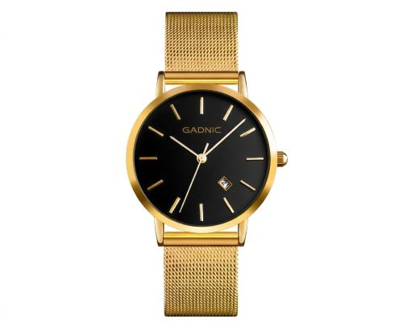
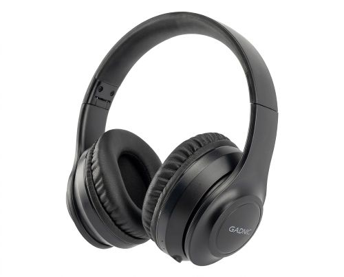

Zapatilla Beige Rosado Air
Zapatilla de deporte de caña baja de color beige rosado con cordones, talón grueso con burbuja de aire lateral, suela marrón estriada y lateral texturizado.

Selección general de relojes de mano, auriculares inalámbricos y zapatillas dentro de una misma página.
Modelos de uso diario y deportivo con distintos acabados y suelas.
Zapatilla de deporte de caña baja de color beige rosado con cordones, talón grueso con burbuja de aire lateral, suela marrón estriada y lateral texturizado.
Otras categorías principales disponibles en el catálogo de la tienda.
Modelos de pulsera pensados para uso diario con lectura clara y correas resistentes.

Equipos sin cables con estuche de carga para escuchar música o atender llamadas.
